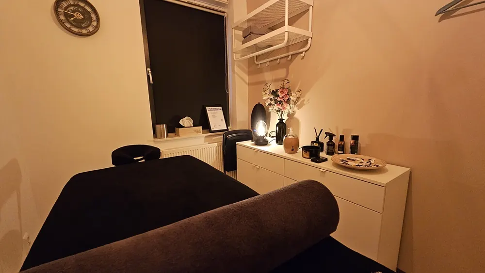

Blessures voorkomen tijdens de voorbereiding op de Nijmeegse Vierdaagse: 7 slimme tips
Gepubliceerd op 13 mei 2025
Onderdeel van de gids Massage in Nijmegen en Nijmeegse Vierdaagse
De Nijmeegse Vierdaagse is voor duizenden wandelaars hét hoogtepunt van het jaar. Vier dagen lang, tientallen kilometers per dag: het vraagt veel van je lichaam én je geest. Juist daarom is een goede voorbereiding essentieel. Of je nu voor het eerst meeloopt of al jaren van de partij bent – blessures liggen altijd op de loer.
Gelukkig kun je veel doen om blessures te voorkomen of vroegtijdig aan te pakken. Hieronder vind je 7 praktische tips die je helpen om fit aan de start te verschijnen én zonder kleerscheuren de finish te halen.

1. Gun je lichaam rust met een preventieve relaxmassage
Wandelen is belastend – vooral als je in korte tijd je kilometers moet opbouwen. Juist in de voorbereidingsfase is het belangrijk om je spieren voldoende rust te geven. Een relaxmassage is hierbij geen overbodige luxe, maar een bewuste investering in je herstel.
Bij Nick’s Relaxmassages in Nijmegen komen tijdens de Vierdaagse veel wandelaars langs die zweren bij een wekelijkse massage. Waarom? Omdat het werkt. Een goede massage:
Bevordert de doorbloeding van je spieren
Voorkomt en verlicht spierpijn en stijfheid
Helpt bij het afvoeren van afvalstoffen
Verbetert je slaapkwaliteit en vermindert stress
Verhoogt je lichaamsbewustzijn, waardoor je sneller klachten opmerkt
Preventief masseren betekent dat je kleine problemen aanpakt vóórdat ze groot worden. Zo voorkom je dat een lichte spiervermoeidheid omslaat in een pijnlijke overbelasting of blessure.

2. Bouw je wandelkilometers geleidelijk op
Ga niet van 5 naar 30 kilometer in een paar weken. Je lichaam heeft tijd nodig om te wennen aan langere afstanden. Gebruik een trainingsschema dat past bij jouw niveau, en plan één rustdag na elke langere trainingsdag.
3. Kies voor goede wandelschoenen (en loop ze in!)
Investeer in kwalitatieve wandelschoenen met voldoende demping en ondersteuning. Laat je adviseren in een gespecialiseerde winkel. En minstens zo belangrijk: loop ze ruim van tevoren in. Nieuwe schoenen tijdens de Vierdaagse? Geen goed idee.
4. Vergeet je voeten niet
Je voeten zijn je belangrijkste gereedschap. Verzorg ze goed:
Gebruik anti-blarencrème of speciale pleisters
Knip je teennagels op tijd en recht af
Laat eelt op tijd verwijderen
Overweeg een voetenmassage voor betere doorbloeding

5. Let op je houding en wandeltechniek
Een verkeerde loophouding kan leiden tot overbelasting van knieën, heupen of rug. Laat je loopstijl eventueel analyseren door een sportfysiotherapeut of podotherapeut. Kleine aanpassingen kunnen grote effecten hebben.
6. Luister naar je lichaam
Pijn is een signaal. Negeer het niet, maar pas je training aan. Blijf je toch last houden? Schakel dan een specialist in, zoals een masseur, fysiotherapeut of sportarts. Vroeg ingrijpen voorkomt langdurige blessures.
7. Combineer wandelen met kracht- en flexibiliteitstraining
Sterke spieren ondersteunen je gewrichten en verminderen de kans op blessures. Voeg lichte krachttraining en stretchoefeningen toe aan je wekelijkse routine. Denk aan core stability, heupversterking en mobiliteitsoefeningen.
Tot slot
De Nijmeegse Vierdaagse is een onvergetelijke ervaring. Met de juiste voorbereiding voorkom je blessures en geniet je meer van elk moment. Neem vooral ook de tijd voor herstel – en plan zeker een ontspannende massage in bij Nick’s Relaxmassages. Jouw lichaam zal je dankbaar zijn.
Veel wandelplezier en succes met de voorbereidingen!
Veelgestelde vragen over de nijmeegse vierdaagse